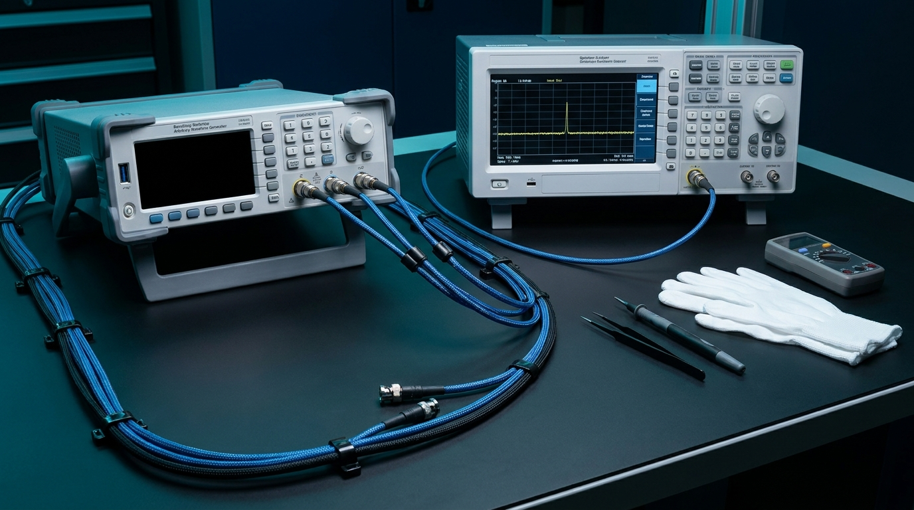
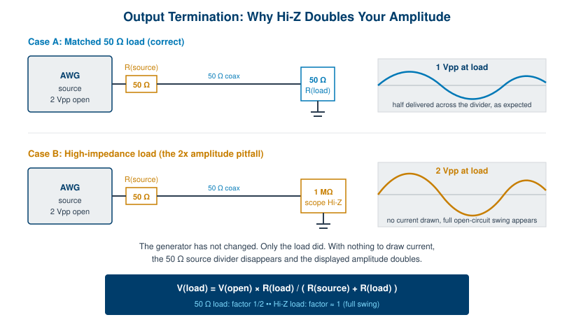
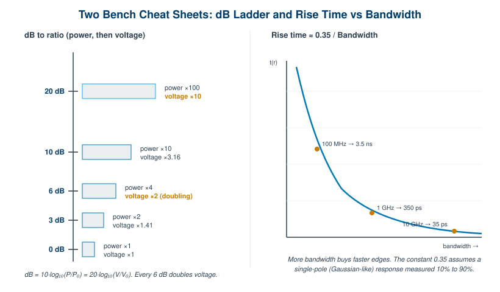

Chapter 10: Performance Tips and Reference Tables

Most of this book has been about what an arbitrary waveform generator does inside the box. This chapter is about what happens outside the box, on the bench, where the signal meets the cables and the load and the engineer who has been awake too long. The physics is the same as everything you have already read. The difference is that here it shows up as a measurement that looks wrong, and you have to know why.
So this is the field manual. The first two sections are practical advice, the kind you collect over a few years of staring at a scope and muttering. The last two sections are reference: tables and formulas you can come back to without rereading the surrounding prose. Nothing here is exotic. It is just the set of things that separate a clean output from a frustrating afternoon.
10.1 Getting the Cleanest Output
Terminate properly, and match your cables. An AWG with a 50 ohm output impedance wants to drive a 50 ohm load through a 50 ohm cable. When all three agree, energy flows out and stays out. When they disagree, part of the signal reflects back down the line, arrives late, and adds to whatever is leaving next. The result is overshoot, ringing, or a flat top that is not flat. Use a proper termination at the far end, keep cable lengths short, and use the same cable type throughout. A reflection you cannot see on a slow sine becomes obvious on a fast edge.
Stay inside the analog bandwidth. Every output stage has a frequency above which it stops keeping up. Push a signal whose harmonics live above that bandwidth and the instrument quietly rounds them off for you. A square wave loses its corners, a pulse loses its rise time, and the amplitude sags at the top of your band. Know the rated analog bandwidth and treat it as a ceiling, not a suggestion. If you need a 100 MHz square wave to look square, you need bandwidth several times higher than 100 MHz to carry the harmonics that build the edges.
Apply inverse-sinc correction. A digital-to-analog converter holds each sample until the next one arrives. That hold is useful, it fills the gaps, but it also imposes a sin(x)/x roll-off across the band, gently attenuating higher frequencies. The fix is to pre-emphasize the waveform by the inverse of that curve so the output comes back flat. Many AWGs offer an inverse-sinc filter you can switch on. Use it when amplitude flatness across the band matters, and verify the corrected response rather than assuming it.
Use dither where it helps. Quantization is deterministic, and deterministic error is the kind that piles up into spurs at predictable frequencies. Adding a small, controlled amount of noise (dither) before quantization breaks up that correlation. You trade a hair of broadband noise for a cleaner spectrum with lower spurs. For spectrally sensitive work, that trade is usually worth making.
Use full DAC scale. Signal-to-noise ratio is set by how far your signal sits above the converter's quantization floor. Drive the waveform at or near full scale and you use every code the DAC owns. Run it at a quarter scale and you have thrown away two bits of resolution and roughly 12 dB of dynamic range for no reason. Scale in the digital domain to fill the converter, then attenuate downstream if you need a smaller amplitude at the load.
Mind the reconstruction filter. After the DAC comes a low-pass reconstruction filter whose job is to remove the images that sampling creates above Nyquist. Choose it to pass your signal band and stop the images. Too narrow and it eats the top of your signal. Too wide and image energy leaks through and shows up as spurs. On instruments that offer a choice of filters, the right one depends on where your signal sits relative to the sample rate.
Pro tip. Warm the instrument up before you trust a precision measurement. Oscillators and reference voltages drift while the chassis comes to temperature, and a generator pulled from a cold rack can move by a measurable amount over the first half hour. If the number you care about is small, let the box settle before you write it down.
10.2 Avoiding Common Pitfalls
The failures below are common because they are easy. None of them announces itself. The signal just looks wrong, and the cause is almost always one of these.
Aliasing from too low a sample rate. Sampling theory is unforgiving. If your sample rate is less than twice the highest frequency in the waveform, the energy above Nyquist folds back down and lands somewhere inside your band, masquerading as a real signal. It cannot be filtered out after the fact because it is now indistinguishable from a genuine tone. The fix is upstream: sample fast enough, and band-limit the waveform before it reaches the converter.
Glitchy loop points. When you loop a stored waveform, the last sample connects straight back to the first. If the segment does not contain a whole number of cycles, the level or the slope jumps at the seam, and that discontinuity radiates harmonics across the spectrum on every repeat. Build looped segments to hold an integer number of cycles so the end meets the beginning cleanly. A loop that is one sample too long will spur for as long as it runs.
DAC clipping from over scale. Filling the converter is good. Overfilling it is not. Ask for an amplitude beyond full scale, or stack modulation on top of a signal already near the rails, and the DAC simply stops at its maximum code. The peaks flatten, and flat peaks are harmonic distortion. Leave headroom when you are summing signals or adding modulation, and watch the digital level, not just the analog readout.
Ground loops. When two instruments share a signal connection and each has its own path to earth, current can circulate through the shield and add hum and noise to your measurement. Symptoms are mains-frequency pickup and a noise floor that changes when you touch a cable. Power related gear from one point, keep ground paths short, and break the loop with isolation when you have to.
Skew between channels. On a multi-channel generator, signals that should arrive together may not, because cable lengths differ or the channels carry small internal delays. A few hundred picoseconds of skew will not show on a slow sine and will absolutely show on a fast edge or a tight I/Q pair. Measure the skew, then deskew with the instrument's per-channel delay or by trimming cable lengths.
Forgetting the output load assumption. This is the one that catches everyone. A generator's amplitude setting assumes a particular load, usually 50 ohms. Connect it instead to a high-impedance input, such as a scope set to 1 megohm, and the voltage at the load doubles, because the internal source divider no longer has anything to divide against. Two volts becomes four. The generator did nothing wrong. You measured into the wrong load. Either terminate in 50 ohms or tell the instrument it is driving a high-impedance load so its amplitude readout matches reality.

Engineer's corner. The 2x amplitude surprise and a level that reads exactly 6 dB high are the same bug wearing two outfits. Voltage doubling is 6 dB, every time. If a measurement is off by almost precisely a factor of two, or almost precisely 6 dB, check your termination before you check anything else.
10.3 Reference Tables
These tables are meant to be used, not read. Keep them open while you set up. The numbers are general AWG and signal engineering, accurate enough to size a measurement and decide whether a result is plausible.
(a) DAC resolution: code levels and ideal SNR. Each bit doubles the number of available codes and adds about 6 dB of dynamic range. The SNR figures assume a full-scale sine into an ideal converter, so real-world numbers run lower once you add converter noise and distortion.
| Resolution | Code levels (2^N) | Ideal SNR (6.02N + 1.76 dB) |
|---|---|---|
| 8-bit | 256 | 49.9 dB |
| 10-bit | 1,024 | 62.0 dB |
| 12-bit | 4,096 | 74.0 dB |
| 14-bit | 16,384 | 86.0 dB |
| 16-bit | 65,536 | 98.1 dB |
(b) Nyquist: maximum signal frequency versus sample rate. The theoretical ceiling is half the sample rate. In practice you want to stay below that, because the reconstruction filter needs room to remove the images and because amplitude flatness suffers as you approach Nyquist. A common rule of thumb is to keep the highest signal frequency below 40 to 45 percent of the sample rate.
| Sample rate | Nyquist limit (Fs/2) | Practical max (~0.4 Fs) |
|---|---|---|
| 125 MSa/s | 62.5 MHz | ~50 MHz |
| 1 GSa/s | 500 MHz | ~400 MHz |
| 2.5 GSa/s | 1.25 GHz | ~1 GHz |
| 6.16 GSa/s | 3.08 GHz | ~2.46 GHz |
| 20 GSa/s | 10 GHz | ~8 GHz |
(c) Playback time: memory depth divided by sample rate. A stored waveform plays for as long as its samples last. Run a fixed memory depth at a higher sample rate and it empties faster. This table reads playback time straight off the two numbers, so you can see the trade between time span and time resolution.
| Memory depth | at 125 MSa/s | at 1 GSa/s | at 20 GSa/s |
|---|---|---|---|
| 256 K samples | 2.1 ms | 262 us | 13.1 us |
| 16 M samples | 134 ms | 16.8 ms | 839 us |
| 1 G samples | 8.6 s | 1.07 s | 53.7 ms |
| 9 G samples | 77 s | 9.66 s | 483 ms |
(d) Decibel quick reference. The decibel is a ratio on a log scale. Power and voltage use different multipliers, which is the source of most confusion. For power, 10 dB is a factor of ten. For voltage, 20 dB is a factor of ten, and 6 dB is the all-important doubling.
| dB | Power ratio | Voltage ratio |
|---|---|---|
| 3 dB | 2x | 1.41x |
| 6 dB | 4x | 2x (voltage doubling) |
| 10 dB | 10x | 3.16x |
| 20 dB | 100x | 10x |
Two related units travel with the decibel. dBc measures a level relative to the carrier, so a spur at minus 60 dBc sits 60 dB below the main tone, useful for spectral purity. dBm measures absolute power relative to one milliwatt, so 0 dBm is 1 mW, and into 50 ohms that works out to about 0.632 volts RMS, or roughly 224 mV at the more familiar 50 ohm 0 dBm point in peak terms. When someone quotes a level in dBm they mean power. When they quote dBc they mean a ratio to the carrier.
(e) Rise time versus bandwidth. For a system with a single-pole roll-off, the 10 to 90 percent rise time and the bandwidth are tied together by a constant near 0.35. Faster edges demand more bandwidth, and the relationship is reciprocal, so halving the rise time roughly doubles the bandwidth you need to support it.
| Bandwidth | Rise time (~0.35 / BW) |
|---|---|
| 50 MHz | 7.0 ns |
| 100 MHz | 3.5 ns |
| 500 MHz | 700 ps |
| 1 GHz | 350 ps |
| 10 GHz | 35 ps |

10.4 Unit and Formula Cheat Sheet
Everything above, distilled to the formulas worth memorizing. These are the equations you will reach for most often when sizing a signal or sanity-checking a number.
| Quantity | Formula | Notes |
|---|---|---|
| Nyquist limit | F(max) = Fs / 2 | Highest frequency you can represent. Stay well below it in practice. |
| Ideal SNR | SNR = 6.02N + 1.76 dB | N = DAC bits, full-scale sine, ideal converter. |
| ENOB | ENOB = (SNDR − 1.76) / 6.02 | Effective bits from measured signal-to-noise-and-distortion. |
| Rise time | t(r) ≈ 0.35 / BW | 10% to 90%, single-pole response. |
| Playback time | t = depth / Fs | Samples stored divided by sample rate. |
| dB (power) | dB = 10 · log10(P / P0) | 10 dB is a factor of 10 in power. |
| dB (voltage) | dB = 20 · log10(V / V0) | 6 dB is a factor of 2 in voltage. |
| Loaded amplitude | V(load) = V(open) · R(L) / (R(S) + R(L)) | 50 ohm load gives half; Hi-Z gives full open-circuit swing. |
Pro tip. If you remember only two numbers from this chapter, make them 6 and 0.35. Six dB is one voltage doubling and one DAC bit, which ties amplitude, resolution, and termination together. The constant 0.35 connects every bandwidth to a rise time. With those two, you can estimate most of what a generator will do before you ever cable it up.
That is the working core of arbitrary waveform generation, from the first sample to the last cable. The next chapter turns from general principles to specific hardware, where these numbers stop being rules of thumb and become published specifications you can hold a real instrument against. As always, confirm any current specification against the datasheet at berkeleynucleonics.com before you design around it.